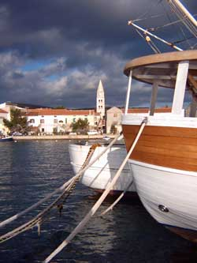

O TurnjuTuranj je atraktivno turistièko mjesto sa oko 1200 stanovnika. Nalazi se na vrlo lijepom polo¾aju u Pa¹manskom kanalu i okru¾uje ga mali arhipelag sa 15 otoèiæa. Prostire se uz otprilike 4 kilometra obale, a kroz mjesto prolazi i Jadranska magistrala ¹to ga èini prometno lako dostupnim. U blizini su gradovi Biograd i Zadar, tako da je Turanj idilièno mirno primorsko mjesto koje je ipak blizu sredi¹ta regije. Povijest TurnjaPodruèje Turnja bilo je naseljeno od bronèanog doba, a prvi arheolo¹ki tragovi potjeèu jo¹ iz mlaðeg kamenog doba. U bronèano doba su bile naseljene "gradine" na brdima oko Turnja i jedna na otoèiæu Rièulu (Zeleni ¹kolj) na kojem se je kasnije nalazila i antièka luèica. U to doba je otoèiæ jo¹ bio spojen sa kopnom. Prvotno naselje se zvalo Tukljaèa (Tukljaèane, Tukljeèane), a u rimsko doba su se tu nalazile tri luèice i veliko rimsko imanje. Tukljaèa je u to vrijeme bila samostalna ¾upa, a iz tog vremena su saèuvane tri crkvene knjige na glagoljici i dva povijesno va¾na glagolja¹ka kamena natpisa. Saèuvan je i dio antièkog vodovoda Biba - Jader. Na mjesnom groblju se nalazi crkvica koja je 845. godine podignuta na ostacima rimske ville rustice, a koja se u povijesnim ispravama naziva crkva Neoskvrnjenog zaèeæa ili Sv. Marija, a u nekim spisima i Stella maris. Sam Turanj se u povijesnim ispravama prvi put spominje u XIII. stoljeæu,
a 1444. godine je u Turnju sagraðena utvrda hrvatskih plemiæa Me¹troviæa.
Po toj kuli je Turanj dobio ime Toretta (prema latinskom turis - toranj, kula)
koje je s vremenom dobilo dana¹nji oblik. Utvrda je bila sagraðena tik uz
more, a zidine su podupirale tri kule. Iz tog vremena je ostala saèuvana jedna
kula (Ka¹tel), glavna vrata i dio bedema. Turanj je za vrijeme Kandijskog
rata bio carinarnica, a inaèe je kroz povijest poznat kao megdani¹te. U to
doba je dio stanovni¹tva bio sklonjen na obli¾nje otoke Pa¹man i Babac, a
Turanj su jednom prilikom Mleèani zapalili da ne bi pao u turske ruke. |
||